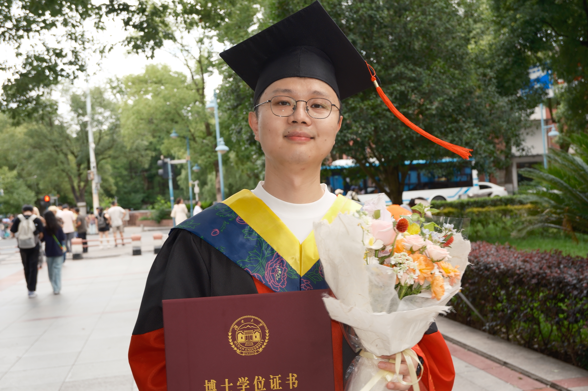

Peng (Andy) Liu
Lecturer, focused on Operations Management
School of Mechanical Engineering
Hunan University of Technology
Contact: liuxp@hut.edu.cn — liuxp@hnu.edu.cn

I am a Lecturer in the School of Mechanical Engineering at Hunan University of Technology. I received my Ph.D. in Mechanical Engineering from Hunan University. My research interests include production and operations management, analytical modeling, and strategic decision-making.
Tariff
I view tariffs not only as trade-policy instruments, but also as operational forces that reshape firms' costs, pricing, sourcing, and production decisions. My interest is in how tariff changes alter strategic interactions across supply chains and, ultimately, firms' operational choices.
Food Recovery Networks
I view food recovery networks as a coordination and allocation problem. Decisions about recipient sourcing, matching, and the balance between quantity and variety affect both system performance and the social value created by food recovery.